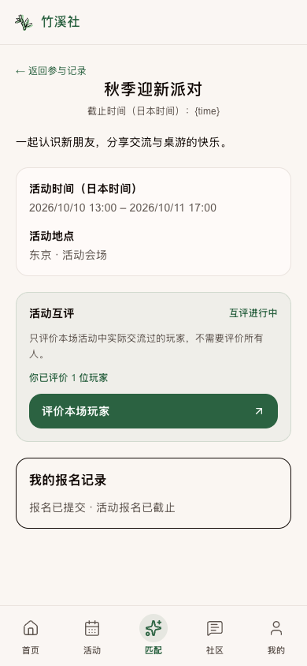
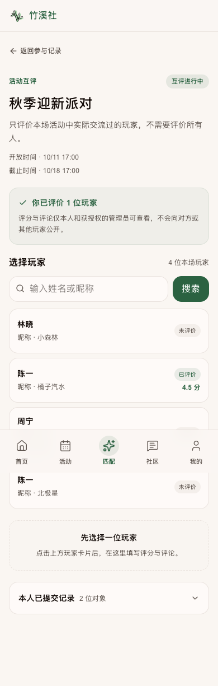
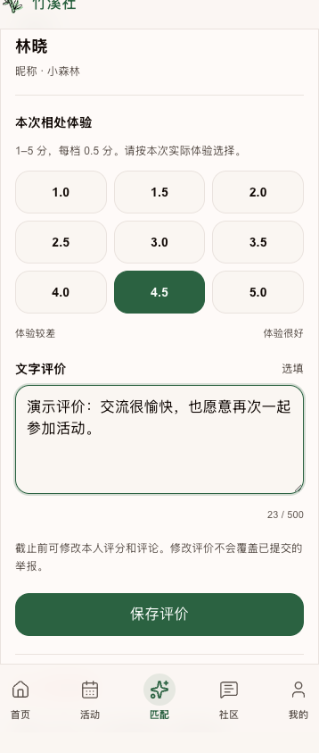
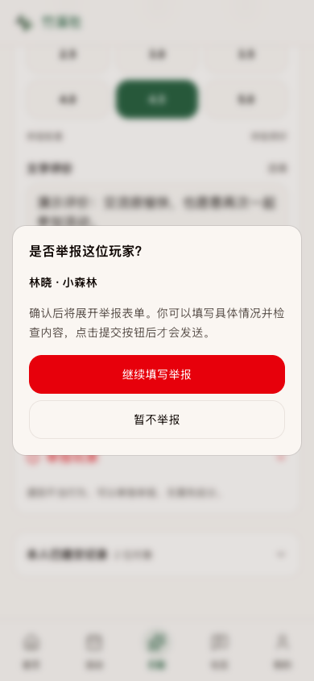
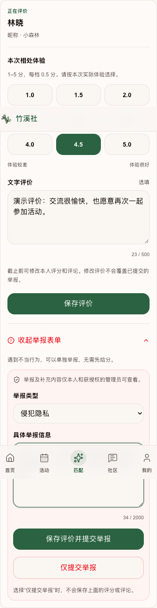
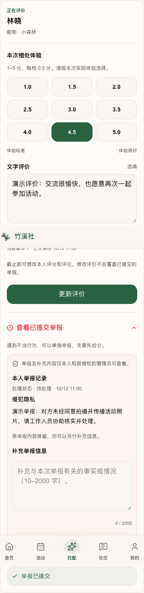
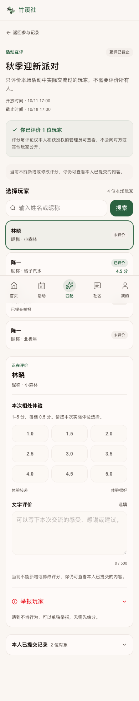
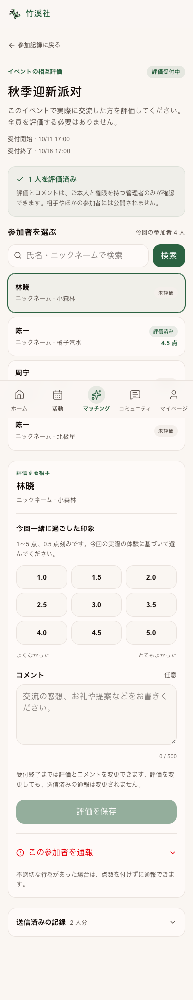
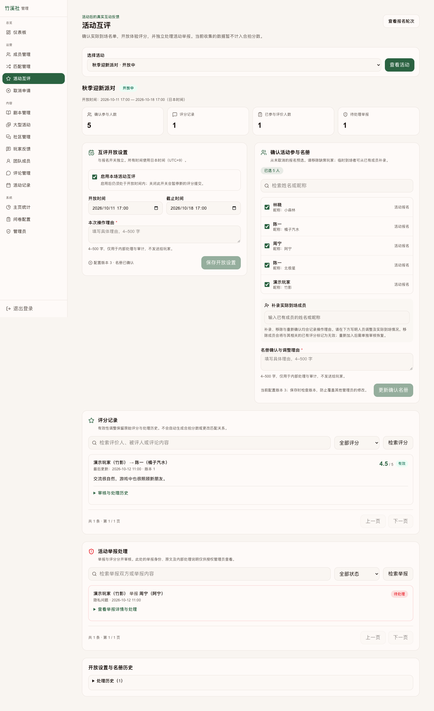
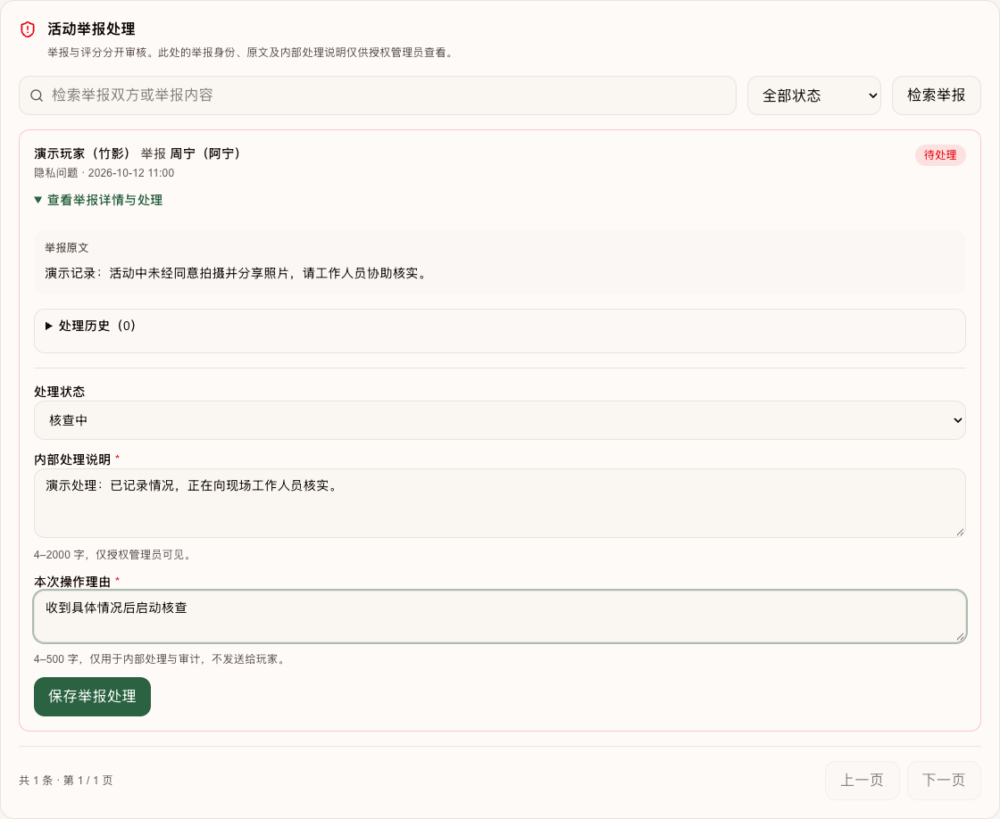

竹溪社 · 2026-10-03 · UI 审查记录
活动互评
修改前 / 修改后
从报名记录进入同场玩家评价，支持半分、文字评论与独立举报，并由后台确认到场名单和处理反馈。
修改前代码基线为 e1d13c1，在任何修改前通过 git archive 保存；修改后来自本次最终组件。图片均由浏览器实际渲染并截取，使用虚构玩家与固定演示时间，未包含真实玩家资料或真实举报。
旧页面展示受影响的真实组件与演示外壳；新互评页、后台工作区使用实际业务组件。Next 路由和服务端动作在截图环境中替换为本地测试适配器。因此，这些图片证明 UI 与本地交互，不代表正式登录账号的完整端到端写入证据，也不表示“秋季迎新派对”已开放互评。
本次实际变更范围
| 页面 | 修改后 |
|---|---|
| /app | 活动互评入口与可评价活动数 |
| /app/matches#participation | 报名卡入口；补录到场者无报名记录也能找到互评 |
| /app/matches/rounds/[roundId] | 互评状态与入口 |
| /app/matches/rounds/[roundId]/reviews | 新增评分、评论、检索、举报和本人历史 |
| /admin/activity-reviews | 新增配置、名册、审核和审计工作区 |
| /admin/matching/rounds/[id] | 报名轮次互评概览 |
| /admin/members/[id]?tab=activity | 成员 360 受限管理入口 |
| 数据库及生命周期 | 独立私有表、权限校验、版本冲突、原子提交、匿名化清理 |
本期只收集与审核原始活动体验数据；尚未生成综合合拍分数，也不改变旧互评触发器、匹配黑名单、统计或小程序。
首页快捷入口
参与记录卡片
报名记录详情
修改后
新增互评状态、已评价人数及进入按钮。截图中活动内容来自实际 RoundDetails；底部报名记录为演示占位，非 Production 全页快照。

后台报名轮次
玩家名单与身份检索
首次进入不默认选择任何分数。姓名与昵称同时显示，同名玩家保留各自成员 ID。名单检索与分页由数据库执行。

九档评分与评论
1.0、1.5、2.0、2.5、3.0、3.5、4.0、4.5、5.0；评论选填且最多 500 字。此图展示选择 4.5 分后的实际表单。

举报前确认
点击红色感叹号先确认玩家；继续只展开表单，不直接发送举报。

隐藏举报表单展开
举报类型和具体信息在确认后出现。可仅举报，也可保存评价并提交举报；组合提交使用原子 RPC。

保存后本人记录
保存成功回填版本和状态。举报原文保持，后续追加补充；其他玩家无法看到。

评分截止状态
停止新增与修改评分；本人历史仍可查看。曾实际开放且资格仍有效时允许举报。

日文与手机布局
新增玩家文案同时提供中文与日文。已检查 390 px 视口无横向溢出。

后台互评工作区
活动概览、开放时间、到场名册、评分审核、举报审核与历史集中管理。人数与内容均为虚构演示。

后台举报处理
查看原文及补充，记录处理状态、内部说明和操作理由。内部说明不返回玩家端。

审查时应确认的规则
- “报名”不是自动确认到场。管理员先保存关闭状态的时间设置，再确认名册，最后启用。
- 评分对象必须属于同一确认名册，不能自评；只评价实际交流过的人，不要求全员互评。
- 截止前可修改评分和评论，评分与举报分开保存；举报补充最多 50 条且不覆盖原文。
- 评分、评论和举报只供作者与授权管理员查看，不向被评价者展示；内部处理说明只在管理端显示。
- 1 分不自动举报或拉黑；管理员可将评分标记无效，历史及理由保留。
- 取消报名或移出名册后可查看本人既有记录，对象显示中性编号；不再开放新的评价操作。
验证与正式环境状态
隔离 PostgreSQL 测试 95 项通过；正式库发布检查 36 项全部通过。正式库已应用唯一增量 20261002165912_round_peer_reviews.sql。安全扫描从 193 项变为 205 项，新增 12 项均为预期的 authenticated SECURITY DEFINER RPC 提示；没有新增匿名执行或 RLS 缺失。
本地浏览器核验了 4.5 分选择、举报确认、评分与举报组合提交参数、后台核查状态和版本参数；服务端为测试回调。评分窗口、身份越权、举报隐私、原子回滚、版本及幂等由真实 SQL 隔离测试另外验证；未进行多连接压力测试或真实玩家 Production 写入。
“秋季迎新派对”正式活动配置为 2026-10-10 13:00 至 2026-10-11 17:00（日本时间）。发布时未替管理员确认实际到场人员，也未提前开启互评。图中的 10/11–10/18 是演示窗口。
完整操作说明见 活动互评功能与运营说明。精确提交与部署状态以会话交付记录及发布记录为准。